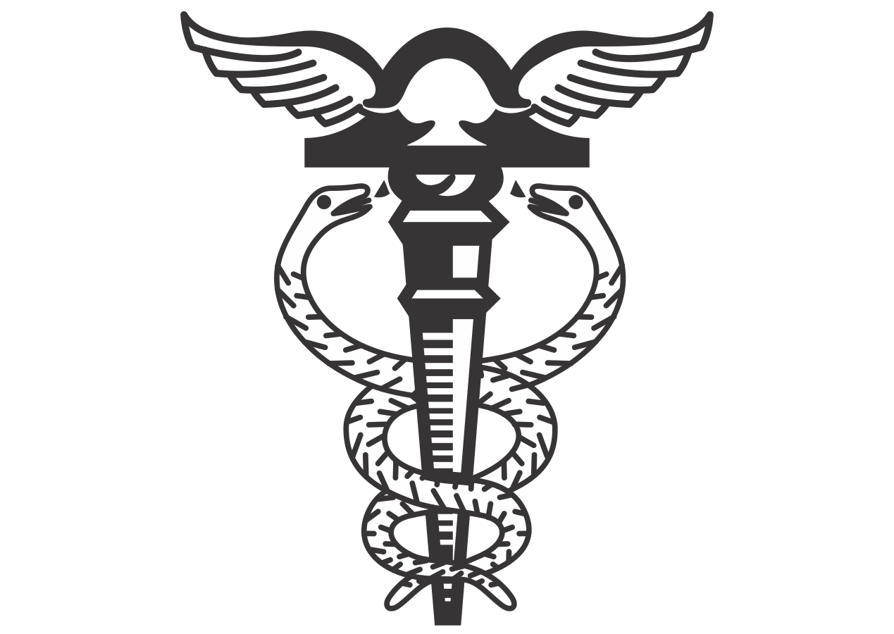

Conheça os cursos da EEEP
Informatica
Tecnico em Informática:
O técnico em informática é o profissional responsável pela montagem e manutenção de computadores, detecção e correção de problemas nos computadores, instalação e configuração de redes e softwares, bem como o desenvolvimento de sistemas e websites.É uma área extremamente ampla e que oferece diversas oportunidades aos profissionais, desde a possibilidade de prestar serviços ou até mesmo atuar de forma autônoma
Professores(a) do curso:
Veronica e Eliane
Contabilidade
tecnico em contabilidade:
O Técnico em Contabilidade, sob supervisão, é o profissional responsável por apoiar, auxiliar, executar e monitorar os processos da área contábil-financeira dos diferentes tipos de organização, relacionados ao orçamento, tesouraria, contas a pagar, contas a receber, captação e aplicação de recursos financeiros, com a finalidade de viabilizar a sustentabilidade dessas instituições.
Professores(a) do curso:
Isaque
agropecuária
Tecnico em agropecuária
Entre as diversas áreas profissionais, a agropecuária está em alta no país. É a junção de duas atividades: agricultura (cultivo de plantas), e pecuária (criação de animais), seja para consumo humano ou para fornecimento de matérias-primas para a indústria alimentícia, de medicamentos, cosmética, têxtil e de biocombustíveis, entre outras.
Professores(a) do curso:
Eron e Vanuza
Administração
Tecnico em administração
Poucas profissões são tão versáteis quanto Administração. Os administradores atuam em setores tão diferentes que o desafio é encontrar um lugar onde não possam trabalhar. Eles estão presentes em hospitais, fazendas, escolas, lojas, indústrias, agências de viagens, padarias, farmácias, açougues, livrarias, floriculturas, cafés, restaurantes, clubes, academias e tudo mais o que você imaginar.Para se manter competitiva no mercado, nenhuma empresa pode abrir mão desse profissional. Ele tem uma visão geral de toda a organização e consegue conectar os diversos setores para torná-la mais eficiente e produtiva.
Professores(a) do curso:
Nonato e Luiza Aline